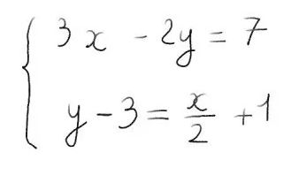

Bon, allez, t’as du bol, j’ai 5 minutes de libres là, je vais pouvoir te laisser quelques petits tips qui devraient te permettre de te débrouiller avec ça.🧐
Si j’étais à ta place, je pourrais, par exemple, prendre un tournevis (celui dans le deuxième tiroir de mon armoire, par exemple 😉), pour essayer de dévisser la porte. Je pourrais aussi accuser la bouteille de guignette et exploser la boite en la faisant malencontreusement tomber par terre (après tout, c’est du toc).
Mais je pense que, ce que je ferais, ce serait plutôt d’aller enchaîner les 3 épreuves qui donnent les codes des coffres qui enferment les cadeaux d’anniversaire. Hein ? Mais quelles sont ces épreuves me dites vous ? Bah écoute, après toi ! Let’s gooo !
Oooooook ! Alors, pour obtenir le premier chiffre du code, clique sur le bouton juste en dessous. Il devrait t’emmener sur un flappy bird en carton, fais un score de 5, et il te donnera ce que tu cherches !
Pas trop fatiguée ?… Allez, la deuxième épreuve c’est easy peasy ! Il s’agit tout simplement de la solution de cette équation :
Hmmm, ça a pas l’air trop cho pour les maths ici.. Si tu préfères, tu peux chercher Charlie :
Nous y voilà, déjà la fin 😥. Je t’entends déjà te dire « Mais enfin, pourquoi diantre aurais-je besoin de passer la dernière épreuve, alors qu’il me suffirait de tester les 10 dernières combinaisons possibles pour pouvoir trouver la solution ? » Et oui ! Mais es-tu garantie d'avoir reçu les chiffres dans l'ordre ? 😈
Allez ! On y est presque ! La réponse de cette énigme te donnera le dernier chiffre et l'ordre dans lequel entrer la combinaison ! Assieds-toi, prends ton temps, tu verras, c'est pas si dur !
"Il y a 5 maisons alignées dans une rue.
Chaque
maison est habitée. L'une par un elfe,
l'autre
par un guerrier, une autre par un vieil
orc,
une
par un riche marchand et une par un
hobbit
qui
aime bien faire la fête.
Le guerrier habite la maison en
bois
du milieu.
L'elfe possède un chien de garde
qui
aboie
souvent la nuit. L'habitant de
la
maison à deux
étages boit souvent de
l'hydromel.
L'orc monte à
cheval et adore boire de la
liqueur.
La maison à deux étages est
située à
droite de
la maison couleur ivoire. Celui
qui
se bat à
l'aide d'un gourdin possède un
aigle
apprivoisé.
L'habitant de la maison en
pierre se
bat à
l'aide d'un bâton. Celui qui ne
boit
que du lait
de chèvre habite dans la maison
du
milieu. Le
marchand habite dans la première
maison, à côté
de la maison sans fenêtres. La
personne qui
utilise la dague en combattant
habite à droite
de la maison où il y a un hibou.
Alors que celle
qui se bat avec un bâton habite
à
gauche de la
maison du propriétaire du
cheval.
Quand il va à
l'auberge, celui qui porte une
épée
longue sur
lui commande souvent une tisane
d'herbes
séchées. Ce n'est pas le hobbit
car
lui il se
bat à l'aide d'une sarbacane.
Pourriez vous me dire
quelle
est la personne qui
ne boit que de l'eau,
sachant que le dernier
chiffre c'est le nombre
de
maisons et que la
combinaison place les
chiffres dans l'ordre
croissant ?"
Fé-li-ci-ta-tion ! Plus rien ne te sépare du contenu du coffre désormais. Quant à moi, j'arrête de t'embêter avec mes idées pourries maintenant. En esperant que le cadeau mystère te plaise, je te souhaite encore un très joyeux anniversaire et je te dis à la prochaine ! big bizou ! 😘
{kind=link}